| 日付 | 2020年1月13日（月） |
|---|---|
| 山域 | 伊豆 |
| メンバー | 家族（妻、長女・8歳、長男・6歳） |
| 山行形態 | 子連れ日帰り |
| アクセス | 車 |
| ルート (Map) | 丹那断層公園 (8:41) - (10:12) 氷ヶ池 - (11:00) 玄岳 (11:53) - (12:19) 下り分岐点 - (13:01) 丹那断層公園 |
玄岳は伊豆の付け根辺りにある展望の良い山である。
山頂直下に車道があって容易に登れる山ではあるが、
それだと歩き足りないので、もう少し下の丹那断層公園から登ることにする。
丹那断層公園の駐車場に車を停める。標高250m。
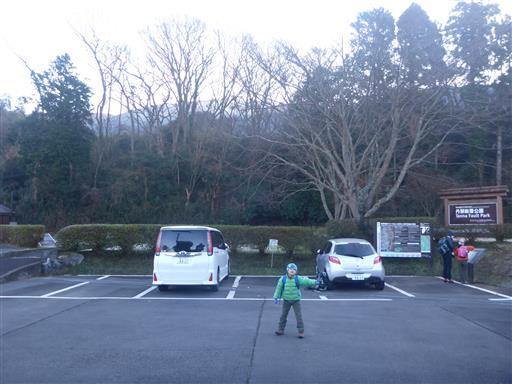
ここは1930年の北伊豆地震で断層がずれ動いた場所だ。
水路が途中でずれている。
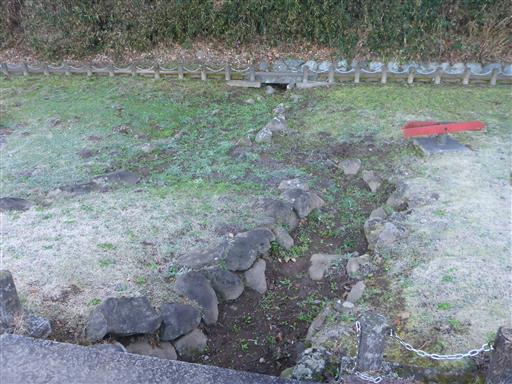
円形の池も真ん中で切断されてしまっている。
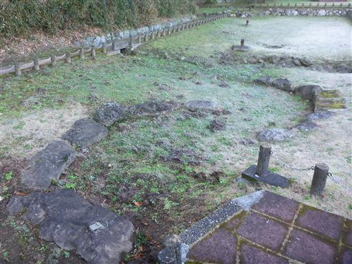
地下の構造が見られるようになっている。
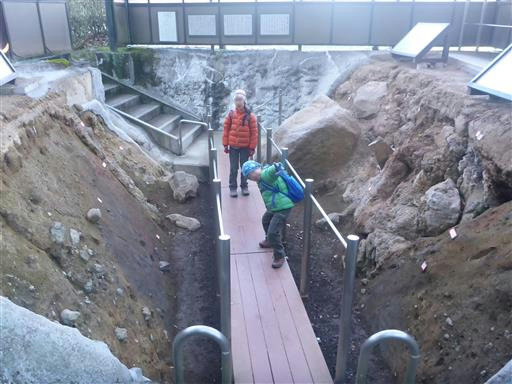
この場所がちょうど断層で、地層が左右で全く異なっている。
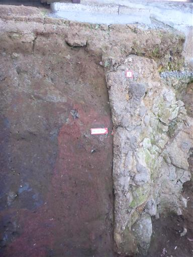
断層を見学したら、山に向かって歩き始める。
公園からは富士山の頭がきれいに見えている。
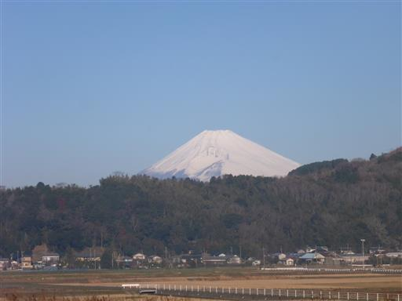
葉は霜に覆われている。温暖な伊豆でも1月の朝は寒い。
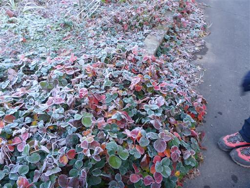
道なりに歩いていったが思った場所と異なる場所に出てくる。
斜面を登って高架の熱函道路に出る。
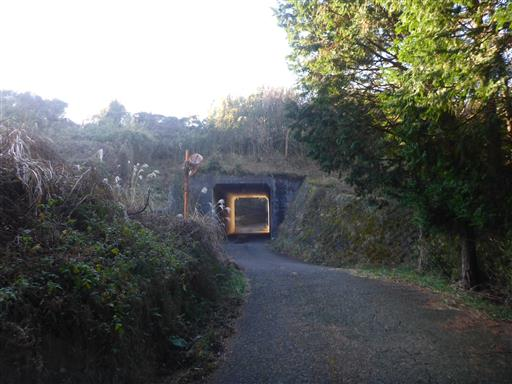
熱函道路を歩いて玄岳登山道の標識のある場所まで出てくる。
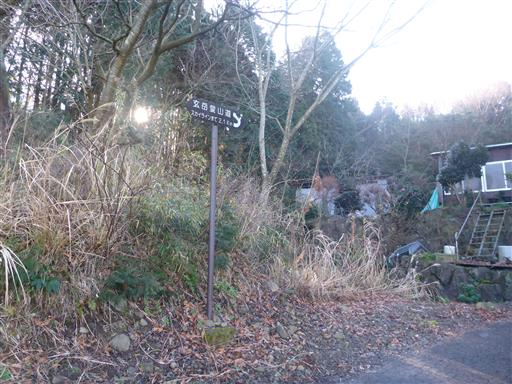
ここまで登ると、富士山の裾野まできれいに見える。
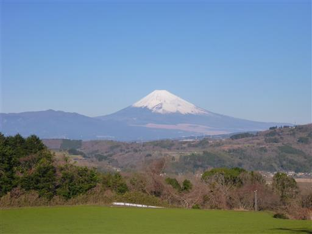
しばらくは植林地帯の中の林道を登って行く。
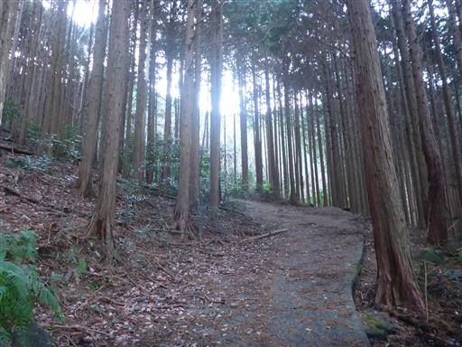
大きな岩が散在している。火山の影響だろうか？
植林地帯に大きな岩がある景色はあまり見ない。
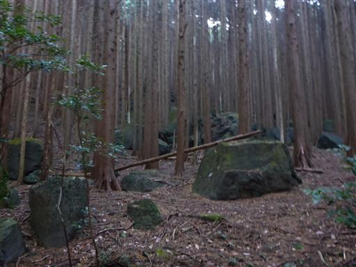
林道をしばらく登ると登山道になり、風景は一変して笹薮地帯になる。

途中で展望が広がる。眼下に広がる町は山の緩斜面にあり、
森の中に家がポツポツと建っている。
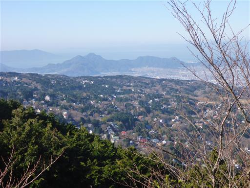
周囲の笹薮は種類が変わり、背の低い笹になる。
一気に青空が広がり気持ちが良い。
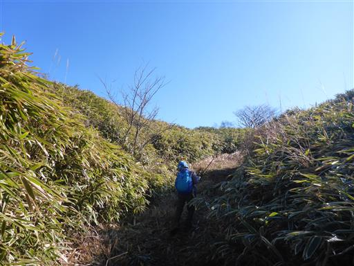
ところどころ笹薮が鬱陶しいところがある。背の低い子供は歩きにくい。
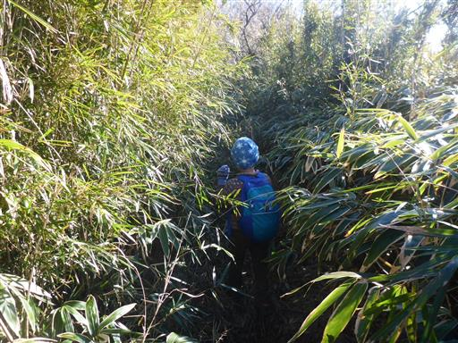
今にも壊れそうな木橋。
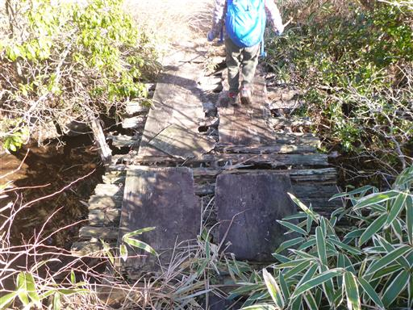
氷ヶ池に到着。小さな窪地に水が溜まっている。
昔の噴火口なのだろうか？
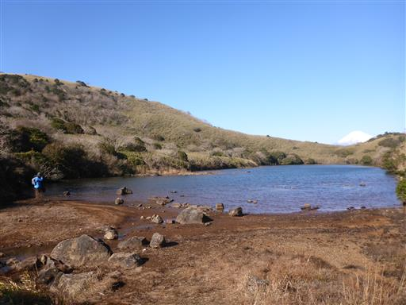
ここからは池の奥に富士山の頭だけが見える、不思議な景観が広がる。
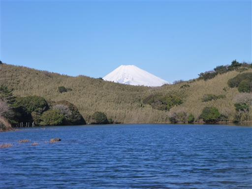
伊豆スカイラインに近づくと、打ち捨てられたガードレールがみられる。
かつてはここも車道だったのだろうか？
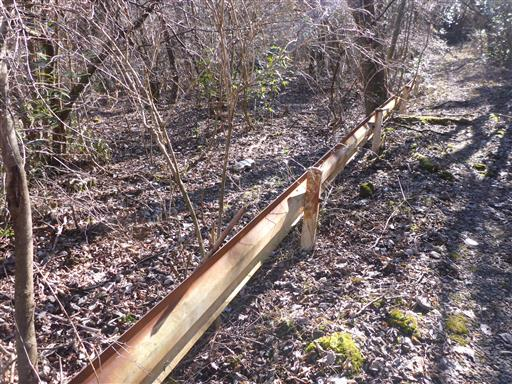
ちょうど伊豆スカイラインのジャンクションのある場所で、何度かトンネルを潜る。
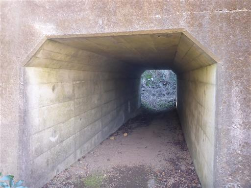
この辺りのルートは少々複雑だ。
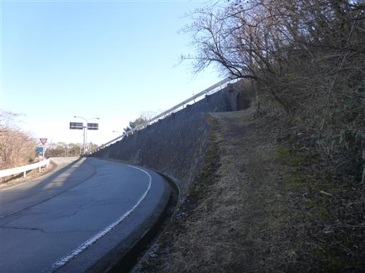
しばらく歩くと古い展望台に到着する。
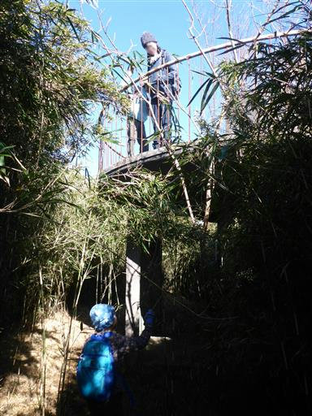
かなり古い展望台でコンクリートは剥がれ落ちて鉄骨がむき出しになっている。
強度は大丈夫なのだろうか？
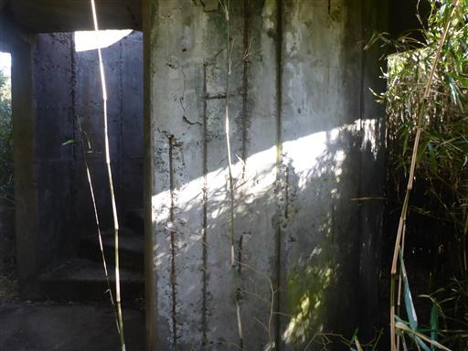
もう使う人はほとんどいなさそうな展望台だが、景色は素晴らしい。
伊豆スカイラインの背後に富士山がきれいに見える。
右側の建物は、かつてあったロープウェイの山頂駅だ。
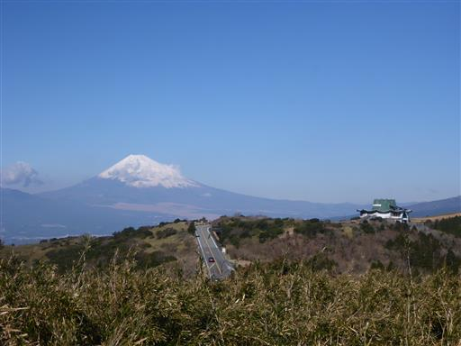
真っ青な太平洋と初島。
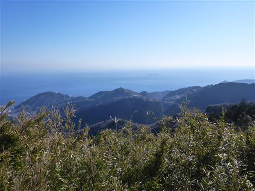
遠くには懐かしい伊豆大島も見える。
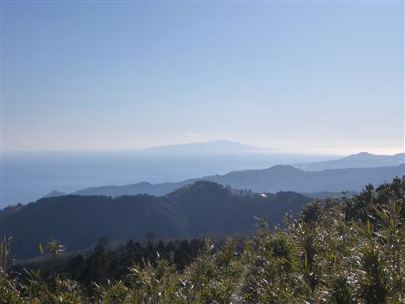
ここから山頂まであと一息。
しかしここから滑りやすい土の急斜面の登山道が始まる。
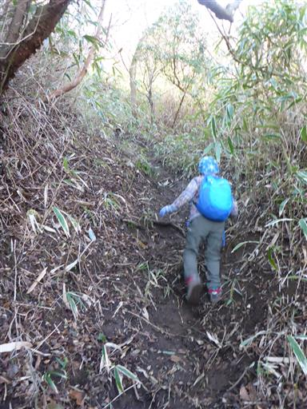
急斜面を登りきると、玄岳山頂が見えてくる。
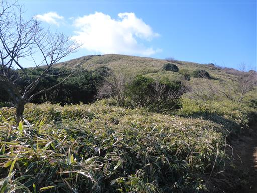
この辺りは背の低い笹に覆われていて、非常に展望の良い登山道だ。
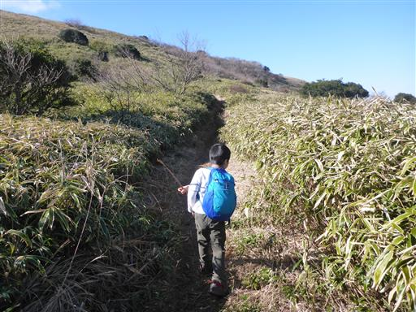
最後の坂を登り切り、玄岳山頂に到着する。標高799m。
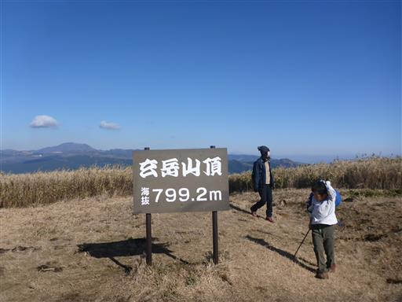
山頂からの展望は素晴らしい。目の前に見えるのは富士山。
残念ながら少し雲がでてきてしまった。
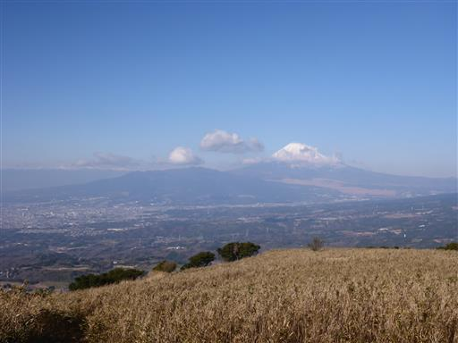
西方には駿河湾と沼津アルプス。
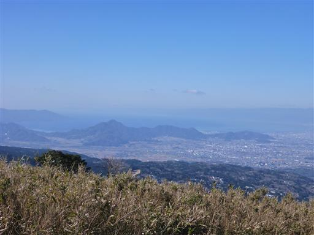
北方には箱根に続くなだらかな山々。奥に見えるのが箱根駒ヶ岳だ。
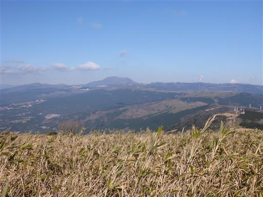
南方には伊豆の中心部にある天城山。
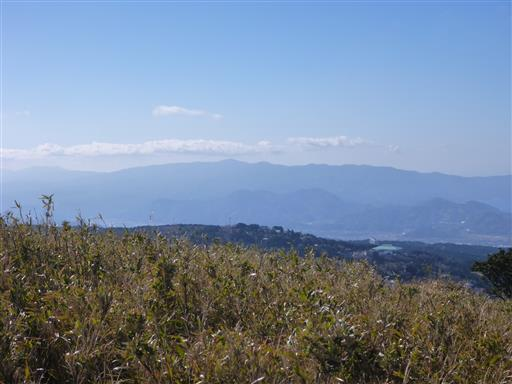
東方には太平洋。風が強く寒いので、風下の太平洋側で昼食をとる。
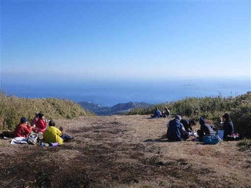
昼食をとったら下山開始。下山道もこれまた展望の素晴らしい道だ。
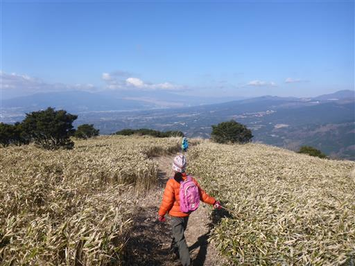
真っ青な海。
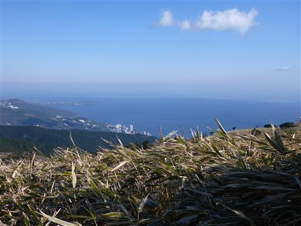
そして山々。景色を眺めながら下っていく。
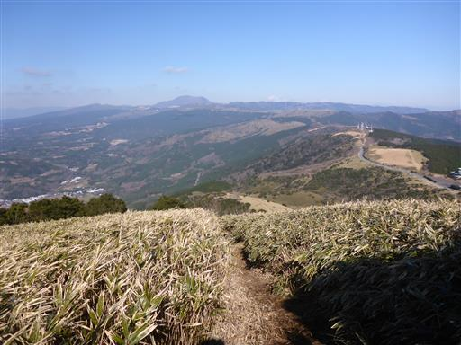
伊豆スカイラインまで下りてくる。歩行者の通行は禁止と記載されているが、
登山道が車道を横切っているので、道路に立ち入るのはやむを得ない。
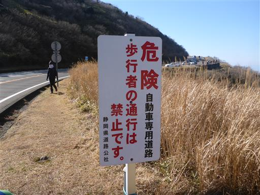
一旦登りに使った道と合流し、再び分岐して別の道に入っていく。今回のコースは8の字状だ。
あまり歩かれてなさそうな道だがピンクのリボンが目印になっている。
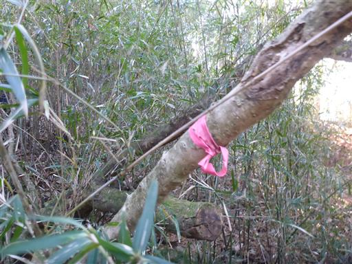
笹薮の中のものすごく細い道。
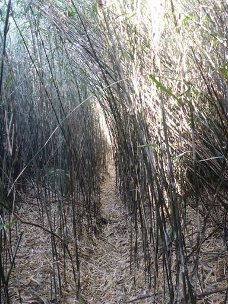
少々わかりづらい道を通り抜けると荒れた林道に出てくる。
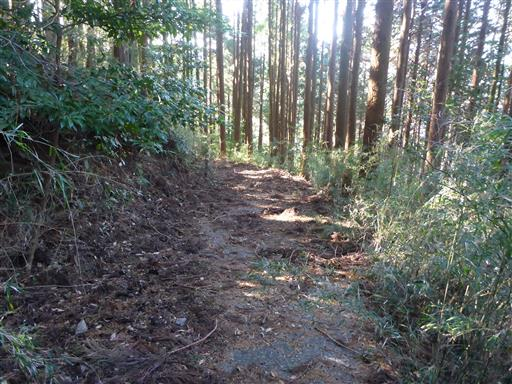
熱函道路に到着。あとは丹那断層公園まで車道を歩くのみだ。
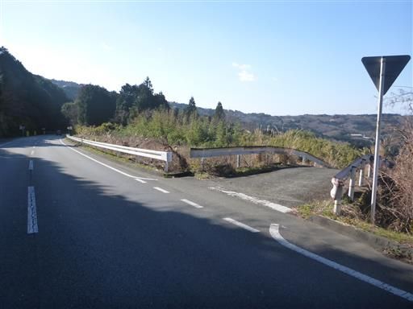
まだ時間が早いため、帰りに姫の沢公園に寄り道する。
ここは無料のアスレチック施設がある。
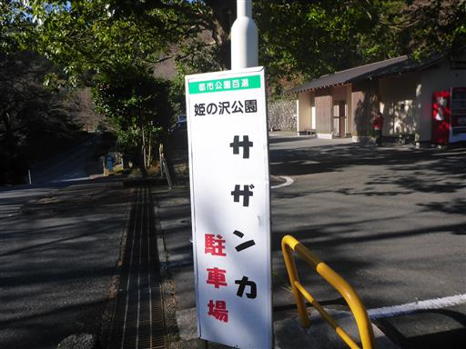
巨大鉄琴。叩くとドレミファソの音がなる。
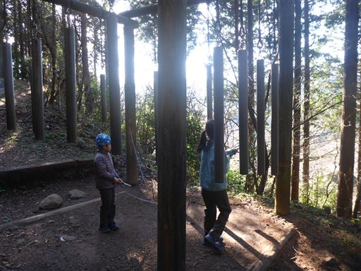
タイヤ渡り。
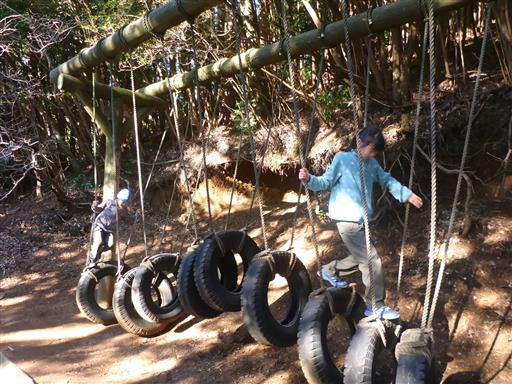
ネット。
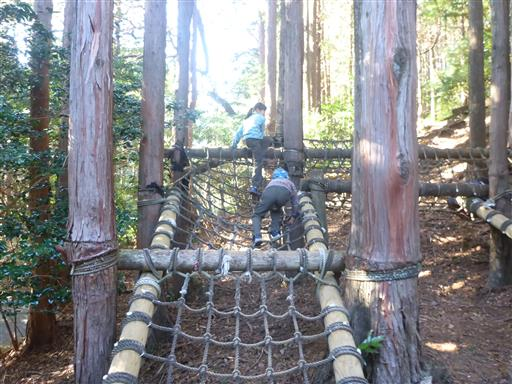
アスレチックは大きな木に括り付けられている。
ロープが木に食い込んでいて少し痛々しい。
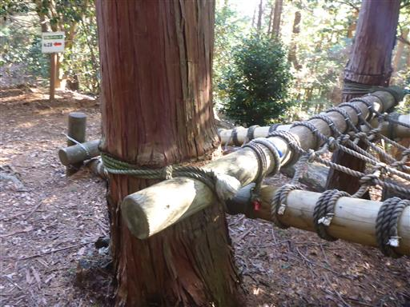
ロープを引っ張って、手を離すと錘がドスンと落ちる。
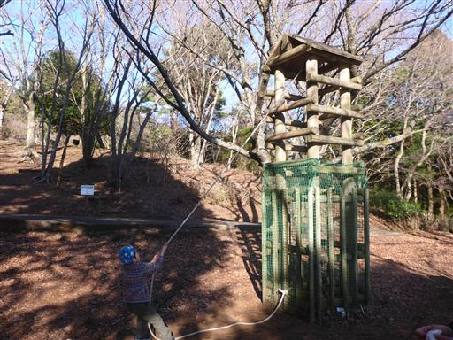
山の後なので、いくつかのアスレチックで遊んだら切り上げて帰ることにする。
玄岳は噂にたがわぬ素晴らしい展望の山だった。
すぐ下に車道があるのと、あまり良い登山道が無いのは残念だが、
気軽に好展望を得られるので、のんびりハイキングには良いかもしれない。
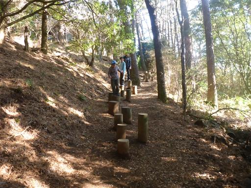